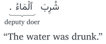

Not ready for study.
22 The passive verb
THIS BOOK IS A WORK IN PROGRESS. IT IS INCOMPLETE AND MAY HAVE TYPOGRAPHICAL AND OTHER ERRORS. IT IS NOT YET READY FOR STUDY.
22.1 Introduction
Consider the sentence:
شَرِبَ زَيْدٌ ٱلْمَاءَ.
s͡hariba zayduni -lmāʾ.
“Zayd drank the water.”
In this sentence, زَيْدٌ “Zayd” is the doer of the verb شَرِبَ “drank”. This construction of the verb, which we have been using so far, is called the active verb construction, because the doer of the verb, in this case “Zayd” is known. Now consider the following sentence:
شُرِبَ ٱلْمَاءُ.
s͡huriba -lmāʾ.
“The water was drunk.”
In this sentence, the doer of the verb, i.e. the person who is doing the action of the verb “to drink”, is not mentioned. From the sentence itself it is unknown who the doer is. This construction of the verb is called the passive verb construction.
22.2 Forming the passive verb
So far we have been studing form 1 verbs, which use only the three root letters. As we know, the vowel on the middle root letter is variable for active verbs, for example:
- شَرِبَ يَشْرَبُ “to drink”.
- فَتَحَ يَفْتَحُ “to open”
- كَبُرَ يَكْبُرُ “to become big”
- etc.
The pattern of passive verb for form 1 verbs is always:
فُعِلَ يُفْعَلُ
fuɛila yufɛalu
This is regardless of the vowel on the middle root letter in the active verb. If there is more than one verb from the same root, with different middle root letter vowels for the active verb, then they will share the same passive verb. For example, the active verbs: حَسَبَ يَحْسُبُ “to reckon” and حَسِبَ يَحْسِبُ “to deem” share the same passive verb: حُسِبَ يُحْسَبُ.
The same doer pronouns are used for the passive verb as for the active verb. And the passive stateful verb has the same three states as the active stateful verb. For example:
- فُعِلُوا fuɛilū “they3m” (perfect)
- تُفْعَلَانِ tufɛalāni “you2” or “they2f” (u-state stateful)
- أُفْعَلَ ʾufɛala “I” (a-state stateful)
- etc.
The complete table showing the doer pronouns is given in appendix @ref(verb-tables).
22.3 The deputy doer
Consider again this sentence with an passive verb construction:
Note that the noun ٱَلْمَاءُ ʾalmāʾu “the water” is in the u-state. This is because, in the absence of the doer, the direct doee of the active verb (ٱَلْمَاءَ) is deputized to take doer’s place in the u-state. It is then known as the deputy doer.
The doer pronouns for the passive verb shall therefore match the gender and number of the deputy doer. Here are some examples:
شُكِرَتِ ٱلأُمَّهَاتُ وَمُدِحْنَ.
s͡hukirati -lʾummahātu wamudiḥn.
“The mothers were thanked and praised.”
أَنْتُمَا تُغْبَنَانِ وَتُخْدَعَانِ.
ʾantumā tug͡hbanāni watuk͡hdaɛān.
“You2 are being cheated and deceived.”
مَا قُطِعَتِ ٱلشَّجَرَةُ.
mā quṭiɛati -s͡hs͡hajarah.
“The tree was not cut.”
22.3.1 The deputy doer for multiple direct doees
Some verbs, in the active construction, take multiple direct doee. These verbs can be classified into two classes:
Verbs that cause the first direct doee to be affected by, or asked for, the second direct doee. Examples:
مَلَأَ ٱلْغُلَامُ ٱلدَّلْوَ مَاءً.
“The boy filled the bucket (with) water.”مَنَعَ ٱلْمَرَضُ ٱلرَّجُلَ ٱلْعَمَلَ.
“Sickness prevented the man (from) work.”سَأَلَ ٱلْفَقِيرُ ٱلْغَنِيَّ دِرْهَمًا.
“The poor [man] asked the rich [man] (for) a dirham.”Verbs that siginify an action of the heart or of intention, like thinking, deeming, making, etc. Examples:
حَسِبْتُ زَيْدًا صَدِيقًا.
“I deemed Zayd [to be] a friend”وَجَدَتِ ٱلطَّالِبَةُ ٱلْأُسْتَاذَةَ حَلِيمَةً.
“The studentf found the professorf [to be] forbearing.”جَعَلَ ٱللَّـٰهُ ٱلْمَاءَ بَرَكَةً.
“Allāh has made the water a blessing.”
When such verbs are converted to the passive verb construction, then one, and only one, direct doee shall be chosen to be the deputy doer. It is generally preferred to make the first direct doee the deputy-doer, and leave the second direct doee, as is, in the a-state. Here are the same sentences in the passive construction:
مُلِئَتِ ٱلدَّلْوُ مَاءً. (دَلْو “bucket” is feminine.)
“The bucket was filled (with) water.”
مُنِعَ ٱلرَّجُلُ ٱلْعَمَلَ.
“The man was prevented (from) work.”
سُئِلَ ٱلْغَنِيُّ دِرْهَمًا.
“The rich [man] was asked for a dirham.”
حُسِبَ زَيْدٌ صَدِيقًا.
“Zayd was deemed [to be] a friend”
وُجِدَتِ ٱلْأُسْتَاذَةُ حَلِيمَةً.
“The professorf was found [to be] forbearing.”
جُعِلَ ٱلْمَاءُ بَرَكَةً.
“Water has been made a blessing.”
22.4 Impersonal use
TODO: add examples from Wright p. 268
When verbs are used without a direct doee, then their passive construction gives in an impersonal meaning. There are a few such usages that we will explain in the following subsections.
22.4.1 With prepositional phrases
Some verbs take no direct doees, but are used with prepositional phrases. For example,
جَلَسَ ٱلنَّاسُ عَلَى ٱلْأَرْضِ.
“The people sat upon the ground.”
Other verbs, which can take a direct doee, may be used without one, and again with a prepositional phrase instead. For example:
كَتَبَ ٱلْكَاتِبُ بِٱلْقَلَمِ.
“The scribe wrote with the pen.”
When such sentences are converted to the passive verb construction then the prepositional phrase may be taken as the deputy doer. However, the preposition causes the noun following it to remain in the i-state. So the deputy doer is not indicated by an apparent ḍammah (or by the other indicators of the u-state). The verb then appears to be in the singular masculine, with its deputy doer following it. For example:
كُتِبَ بِٱلْقَلَمِ.
“The pen was written with.”
22.4.2 With adverbs of time or place
Other verbs don’t take a direct doee but may be used with an adverb of time or place in the a-state. (We will study adverbs of time and place in chapter @ref(adverbs-of-time-and-place), if Allāh wills.) Here is an example:
When this sentence is converted to an passive construction then the adverb of time or place can be taken as the deputy doer in the u-state:
سُهِرَتْ لَيلَةُ ٱلْقَدْرِ.
“The Night of Power was stayed up [in].”
Note the u-state of لَيْلَةُ laylatu as the deputy doer.
22.4.3 With the maṣdar
The maṣdar, because it is the action being done may be considered a kind of direct doee. (We will study the use of the maṣdar as a doee in chapter @ref(absolute-doee), if Allāh wills.) For example:
فَهِمَ ٱلشَّيْخُ فَهْمًا عَمِيقًا.
“The old man understood, a deep understanding.”
When such sentences are converted to the passive verb construction, then the maṣdar may be taken as the deputy doer in the u-state.
فُهِمَ فَهْمٌ عَمِيقٌ.
“A deep understanding was understood.”
22.4.4 Requirement of specialization
When a prepositional phrase, or an adverb of time or place, or a maṣdar is to be used as a deputy doer in an passive verb construction, then it is required that they be specialized in meaning, and not used in a general sense. So for example, if we have the sentence:
سَهَرَتِ ٱلْأُمُّ لَيلَةً.
“The mother stayed up a night.”
then because of the non-specialized meaning of لَيْلَةً, such a sentence is typically not suitable for being converted to a passive verb construction.
22.4.5 Choosing the deputy doer
If a sentence is to be converted to an passive verb construction and it has more than one of the following:
- a direct doee
- a specialized prepositional phrase
- a specialized adverb of time or place
- a specialized maṣdar
Then only one shall be chosen as the deputy doer. If a direct doee exists, then it is typically chosen. If a direct doee does not exist, then the one desired to be emphasized may be chosen as the deputy doer. For example:
سُهِرَ فِي ٱلْمَسْجِدِ لَيلَةَ ٱلْقَدْرِ.
“The mosque was stayed up in [on] the Night of Power.”
In the above sentence the prepositional phrase فِي ٱلْمَسْجِدِ was chosen as the deputy doer, and the adverb of time لَيْلَةَ remains, as is, in the a-state.
22.5 States of the passive stateful verb
The passive stateful verb has three states, just like the active stateful verb: the u-state, the a-state, and the 0-state. The three states are used in the same circumstances, and with the same rules that we have already learned.
So the u-state verb is used for making plain statements:
تُذْكَرُ قِصَّةُ ٱلْمَلِكِ فِي كُتُبِ ٱلتَّأْرِيخِ.
“The story of the king is mentioned in the books of history.”
لَا تُرْفَعُ ٱلْأَصْوَاتُ فِي ٱلْمَكْتَبَةِ.
“Voices are not raised in the library.”
The a-state verb is used for expressing wish or purpose:
يَأْمُلُ ٱلْمُسْلِمُونَ أَنْ يُغْفَرُ لَهُمْ.
“The Muslims hope that they be forgiven.”
(Note that يُغْفَرَ has a singular masculine deputy doer because there is no direct doee.)
لَنْ تُسْمَعَا.
“You2 shall not be heard.”
دُفِعَ ٱلْبَابُ حَتَّىٰ يُفْتَحَ.
“The door was pushed for the result that it open.”
Similarly, the 0-state verb is used in the following cases:
With لَمْ “was not”:
لَمْ يُؤْذَنْ لِي أَنْ أَدْخُلَ.
“It was not permitted for me that I enter.”With لَمَّا “not yet”
لَمَّا يُكْتَبْ كِتَابٌ فِي هَـٰذَا ٱلْمَوْضُوعِ.
“A book has not yet been written in this subject.”With لِ for indirect commands1:
لِيُسْمَعْ صَوْتُهُ!
“Let his voice be heard!”There is no verb of command for passive verbs. So while indirect commands are typically not used for the addressee participant for active verbs (see section @ref(indirect-commands)), they are the only way to issue commands for the addressee participant in the passive verb construction:
لِتُنْصَرُوا!
“Let you3m be aided!”
22.6 Usage of the passive verb
There are cases where it is permissible to use of the passive verb construction, and cases where it is not permissible to use of the passive verb construction. We will explain them below:
22.6.1 Permissible use of the passive verb
There can be a number of reasons why a speaker is forced to, or chooses to, use the passive verb construction. Among these reasons are:
When the doer is actually unknown to the speaker. This is the classic use-case, as indicated by the name passive verb. (But, as we shall see below, it is not the only use case.) So, if we say:
كُسِرَتِ ٱلزُّجَاجَةُ.
“The glass was broken.”then, it may be that we don’t know who broke the glass, and that is why we are expressing it in the passive verb construction.
When the doer is known to the speaker, but he does not wish to make him known to others. So the same sentence above كُسِرَتِ ٱلزُّجَاجَةُ. could be used when the speaker knows that it was actually زَيْد “Zayd”, for example, who broke the glass, but the speaker does not wish that others find out that it was Zayd. This itself could be for any reason, for example: the speaker fears Zayd, for fears for Zayd, etc.
When the speaker wishes to draw attention to the act itself rather than the doer of the act. So we might say:
مُنِعْنَا ٱلدُّخُولَ.
“We have been prevented from entering.”when we wish to focus on the act of our having been prevented, rather than who prevented us.
For stylistic reasons, when it is obvious and known who the doer is. For example:
خُلِقَ ٱلْإِنْسَانُ مِنْ ْعَجَلٍ
“Man was created of haste [i.e., impatience].” (Qurʾān 21:37. Trans. Saheeh International)In the above ʾāyah it is known and obvious that Allāh created man.
In order to glorify the doer. So we might the passive verb construction to say:
خُلِقَ ٱلْخِنْزِيرُ.
“The pig was created.”This could be to distance Allāh from being mentioned next to the name of a particularly dirty animal.
When the doer is not mentioned due to contempt for him. For example:
قُتِلَ أَمِيرُ ٱلْمُؤْمِنِينَ عُمَرُ.
“The Commander of the believers, Ɛumar, was killed.”In this sentence we chose not to name the killer due to contempt for him.
These reasons are not mutually exclusive, and sometimes the passive verb construction is used for a combination of them.
22.6.2 Impermissible use of the passive verb
The passive verb may not be used when the doer is mentioned with the verb. This is different from English which can use the word “by” to indicate the doer in a passive voice construction, as in: “The book was written by Zayd.”. Such a sentence, in Arabic can only be expressed with the active verb construction:
كَتَبَ زَيْدٌ ٱلْكِتَابَ.
kataba zayduni -lkitāb.
“Zayd wrote the book.”
It may seem like this rule is broken in sentences like:
قُتِلَ بِٱلسَّيْفِ.
qutila bi-ssayf.
“He was killed by the sword.”
But such is not the case. The active verb constuction would be something like:
قَتَلَهُ فُلَانٌ بِٱلسَّيْفِ.
qatalahu fulānun bi-ssayf.
“So-and-so killed him with the sword.”
As you can see, فُلَان “so-and-so” is actually the doer, and ٱلسَّيْف “the sword” is merely a prepositional phrase indicating the instrument used in the act.